Panther Fails to Connect to LIS
Error Codes
272.000.00002 – LIS Laboratory Information System.: Cannot establish connection.
Laboratory Information System.: Cannot establish connection.
272.000.00003 – LIS: The connection to host was lost.
Complaint Description
The TCP connection between the Panther and the LIS has failed. Connection must be re-established to resume flow of test orders and results.
Technical Support
TCP/IP: Verify Physical Connectivity of Network Devices
There could be a bad ethernet cable, or the network devices (Panther, switch, firewall, customer wall port) are not correctly plugged into the appropriate network device, or that the network devices are off.
Firewall Models: (Cisco ASA 5505 and Cisco ASA 5506-X)
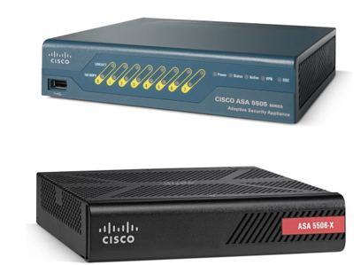
Firewall cable connections:
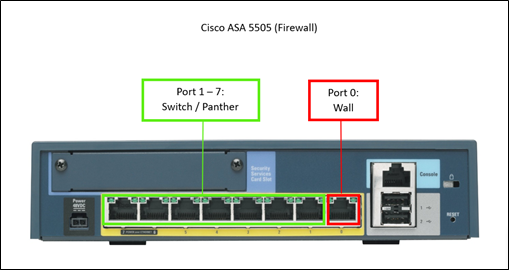
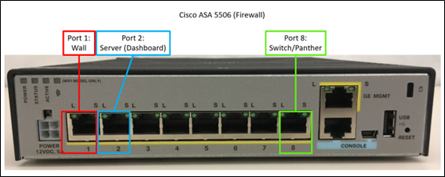
Where to find the firewall:
-
Inside the Panther’s Computer Bay, next to or on top of the computer tower.
-
Outside the Panther near the customer’s network port or power outlet.
-
In the customer’s networking cabinet or closet.
Switch Cable Connections: (Cisco ASA SG112-24 Switch)
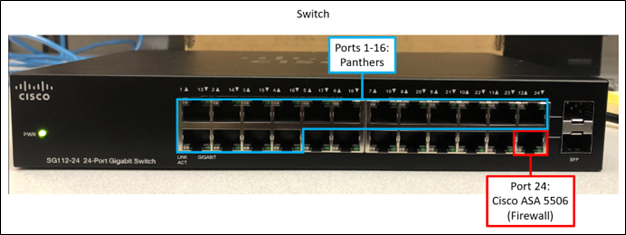
Resolution
Check Network Device Connectivity:
-
Power cycle Cisco ASA switch by unplugging power cord. Then plug power cord back in.
-
Verify that the Panther is properly plugged into the next network device, and that link lights are present. If link lights are not present, either secure the connection, or ask Customer IT to replace the cable.
-
If the Panther is plugged into a switch, verify that the Panther is connected to the switch on ports 1-16. Look for the presence of link lights on either the switch or the Panther.

Example of Network Interface Card Link Lights
- If the Panther is plugged into a firewall, verify that the Panther is connected on ports 1-7 (5505) or 8 (5506-X). Look for the presence of link lights on either the firewall or the Panther.
-
- If applicable, verify the switch is plugged into the firewall on either port 7 (5505) or port 8 (5506-X). Look for the presence of link lights on either the firewall or the switch.
- Verify the firewall is plugged into the customer wall port on either port 0 (5505) or port 1 (5506-X). Look for the presence of link lights on the firewall.
Check customer’s IT/LIS team:
-
Ask IT to verify that the ethernet cables are working correctly.
-
Use cable testing equipment to verify electrical continuity.
-
Use cable testing equipment to verify electrical continuity.
-
-
Ask IT to verify the wall jacks are functional.
-
Have their IT people use loopback testing hardware to verify function of wall jack.
-
Have their IT people attempt to use the same wall jack to plug in their own equipment (e.g. their laptop) to see if they have network connectivity.
-
Have their IT people verify functionality of switch in network closet; check for cable continuity or try different switch port.
-
-
Ask IT to verify the Cisco ASA is visible on the network.
Have their IT people verify that the Cisco ASA can be seen on their network matching the IP address they assigned to the ASA with the MAC address of port 0/1 on Cisco ASA 5505/5506. See network configuration files on H1 asset record.
-
Ask IT to verify that there is a network path from the Panther to the LIS, and that the LIS port is open and listening.
-
Have their IT people verify they can telnet (not ping) from an IP address in the same VLAN as the Panther to the LIS IP address and port.
-
Ask the IT/LIS admins to verify that the LIS port is open and listening. E.g. perform a “netstat -a” to verify the port is open ask them to show you the output of the “netstat”.
If LIS port is open and listening, Local Address = LIS IP address and port and State = Listening.
If there is already a connection to the Panther, Foreign Address = IP address and port of Cisco ASA and State = Established.
If LIS IP address and port are not visible in output, the LIS software may not have the port available for Panther to connect to.
If the LIS IP address and port are visible in output but Foreign Address is not the same as the IP address of Cisco ASA, a different lab device may already be using the port and preventing the Panther from connecting.
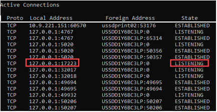
-
Test:
Admin > LIS Configuration > Uncheck and recheck “Enable LIS Connection”>Save
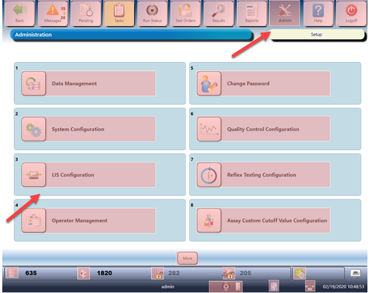
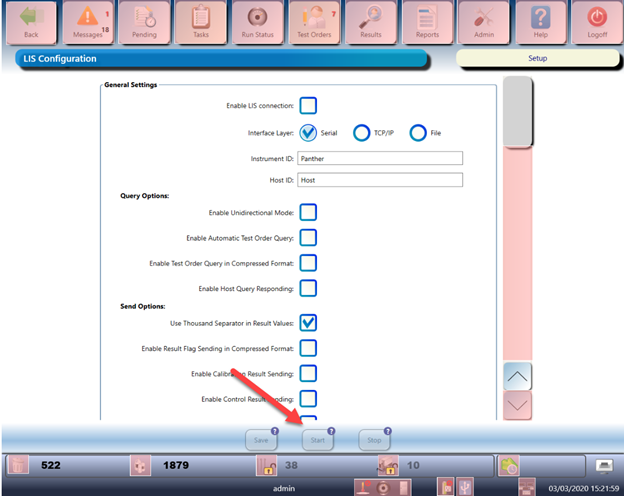
Serial: Verify Serial Connectivity of Network Devices
There could be a bad serial cable (RS-232 The standard used in the instrument and LIS Serial ports; it defines the electrical characteristics and timing of signals, the meaning of signals, and the physical size and pin out of connectors.) or serial to ethernet adapter (e.g., Lantronix) are not correctly plugged into the appropriate COM port, or that the network devices are off.
The standard used in the instrument and LIS Serial ports; it defines the electrical characteristics and timing of signals, the meaning of signals, and the physical size and pin out of connectors.) or serial to ethernet adapter (e.g., Lantronix) are not correctly plugged into the appropriate COM port, or that the network devices are off.
Resolution
-
Ask customer to check the back of the PC tower, located at lower bay of Panther instrument, verify the serial cable (RS-232) or serial to ethernet adapter (e.g., Lantronix) is connected to the COM1 port.
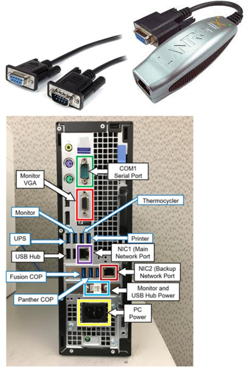
-
Ask customer to verify serial cable electrical continuity and pin configuration.
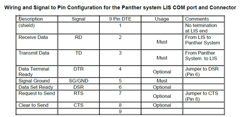
-
Ask customer to verify serial port settings on terminal server or adapter match to Panther GUI
 Graphical User Interface – allows users to interact with the software using images, graphical icons, and visual indicators rather than text commands. serial port settings.
Graphical User Interface – allows users to interact with the software using images, graphical icons, and visual indicators rather than text commands. serial port settings.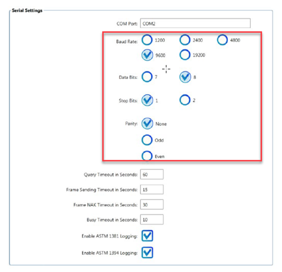
-
Ask customer to verify that any customer managed Lantronix/Xyplex/Digiport terminal servers are functional.
- If customer notes that the IP address of middleware is 169.254.*.*, the DHCP server is down: the DHCP server has assigned an Automatic Private IP Addressing (APIPA) address. Recommend to the customer to check their DHCP server or manually assign an IP address.
- Suggest moving to Static IP address assignment, rather than DHCP.
-
Ask customer to verify that their LIS has connectivity to the Lantronix/Xyplex/Digiport terminal servers.
Test
Retransmit a result to the LIS.
-
Click Results in the top menu bar.
-
Select a patient result to send to the LIS.
-
Click Send results to LIS at the bottom of the screen.
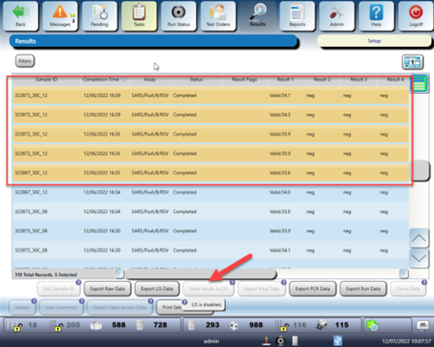
-
Confirm there are no errors while transmitting data to LIS messages.
Field Service
Verify Proper Configuration of Cisco Firewall
For LIS connectivity to work, the Cisco Firewall must be configured to allow traffic to the designated IP address and port. This is configured via Firewall Wizard. If the Firewall is not correctly configured, the Panther System will continuously fail the Dashboard Connectivity Test.
Diagnosis: Verify Correct Configuration of Cisco Firewall
-
Download and install latest version of Firewall Wizard.
-
Connect laptop via USB to the Cisco firewall using the console port located on the back of the firewall. Connect the USB-end into laptop, connect the opposite end into the Cisco firewall.
-
For a 5505, you will need a Console Cable (included with the 5505 off-the-shelf), and a USB-to-Serial converter (not included and not provided by Hologic supply chain; expense if required).
-
For a 5506-X, you can use either the above cabling, or a USB to mini-USB cable (included with the 5506 off-the-shelf).
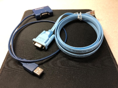
Console Cable with Serial-to-USB Converter
Mini-USB Cable
-
-
Open Firewall Wizard and select Save the current firewall configuration.
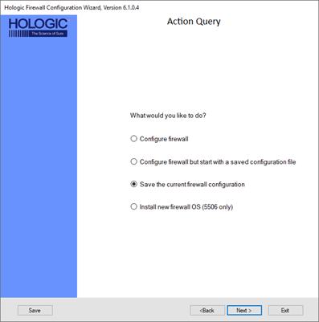
-
Designate a location to save the files. Recommend saving them on the Desktop for ease-of-access.
-
Upon completion of the Firewall Wizard process, click Exit.
-
There are two files generated by the Firewall Wizard process: open the output.txt file.
-
To find the IP address of the LIS server, find the following section in the output.txt file:
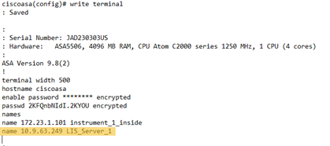
In this example, LIS server's IP address is 10.9.63.249.
-
To find the IP address of the LIS port, find the following section in the output.txt file:
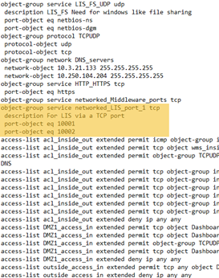
In this example, defined LIS ports are 10001 and 10002.
-
Verify this matches with the LIS settings configured in the Panther Software.
If they do not match, verify with customer or Molecular Support what the proper IP address is supposed to be.
- If the Cisco firewall needs to be reconfigured, please follow the Service Manual procedure to configure the firewall (\Content\Install\LINK\Firewall\4_Programming\Firewall.htm).
- If the LIS IP needs to be changed, make the appropriate change in the LIS configuration.
Test
Retry Connectivity Tester.
Check Network Route
Connectivity to an LIS server requires two things: an IP address/network route, and an open port. At this point, escalation to customer IT is likely, however further diagnostics must take place to determine what the issue is.
Test
Ping Gateway, Ping LIS Server.
Using HyperTerminal or PuTTY, enable ping on the ASA and verify you can reach the appropriate destination.
-
At the Command Line Interface (CLI) of the ASA (ciscoasa>), type in the command “enable”. The system will prompt for a password.
-
Enter the appropriate password (“gpservice”). The prompt will change to Privileged EXEC mode (ciscoasa#).
-
At the prompt, type in the command “config t”. The prompt will change to Global Configuration mode (ciscoasa(config)#).
-
Enter the following two commands to enable ping. Type in the following commands on separate lines:
- no icmp deny any echo-reply outside
- no access-list outside_access_in extended deny ip any any
Note: Inputting these commands will result in no output, and will return you to ciscoasa(config)#.
Note: Leaving ping enabled is a cybersecurity risk. It can be enabled for troubleshooting, but should be disabled for normal operation.
To disable ping, use the same above commands, but remove no at the beginning of the command, that is:
- icmp deny any echo-reply outside
- access-list outside_access_in extended deny ip any any
-
Ping the IP address for the designated gateway.
- If the response is 5/5, continue to step 6.
- If the response is 0/5, it indicates that the ASA has not successfully joined the customer network. Escalate to customer IT, indicating as such.
-
Ping the LIS IP address by typing in the command ping X.X.X.X, where X.X.X.X is the IP address of the LIS.
- If the response is 5/5, it indicates that the LIS is reachable (routable) on the network, and it is likely that the TCP port is closed. Retry connectivity tester. If the test fails, escalate to customer IT, indicating as such.
- If the response is 0/5, it indicates that the ASA cannot reach the LIS server (the network route does not exist). Retry connectivity tester. If the test fails, escalate to customer IT, indicating as such.
Note: If technical assistance is needed for escalation, contact either the TSLIMSTeam at Molecular Support, or TSE Technical Service Engineer. Network Specialists.
Technical Service Engineer. Network Specialists.
Resolution
Escalate to Customer IT.
 button at the top of the page to send feedback, comments, or change requests.
button at the top of the page to send feedback, comments, or change requests.